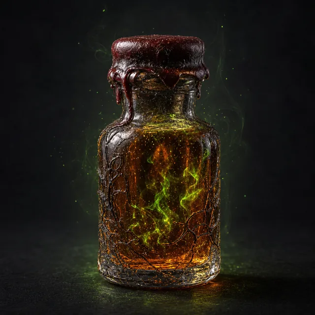

Расходник · undefined · №24
Выпейте жидкость, чтобы получить 3 жетона Ведьмовского Огня. Вы можете потратить любое количество этих жетонов и совершить Бросок Заклинания (11). При успехе вы выпускаете магический болт в противника в пределах Далекой дистанции, нанося 1d10 магического урона за каждый потраченный жетон. При провале бросьте d6; на 1 бутылка опустошается и больше не может быть использована.
Открыть в генераторе лута